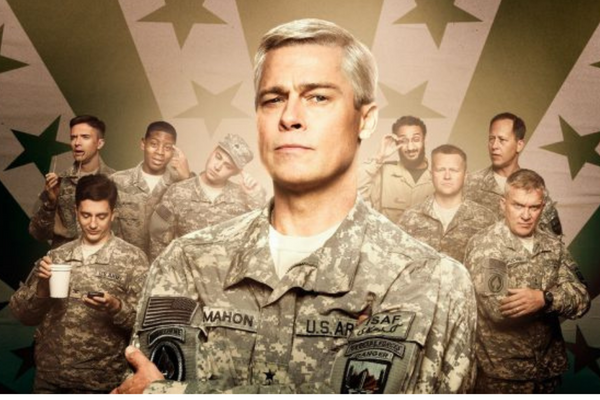

Filme: War machine
Olá pessoal, tudo bem com vocês? Esperamos que sim! Bem, hoje viemos trazer mais uma indicação especial, dessa vez de um filme que aborda lições voltadas ao trabalho em equipe e liderança na gestão. Esperamos que gostem!
A obra cinematográfica de hoje é: War machine. O filme nos apresenta a história do general Glen McMahon (Brad Pitt), responsável pelas forças armadas dos Estados Unidos, no Afeganistão, durante o conflito posterior ao 11 de setembro. O longa é uma adaptação do livro “The Operators: The Wild and Terrifying Inside Story of America 's War in Afghanistan”, e em seu enredo o filme satirizou a forma como os EUA se mostra sempre em posição de heróis.
Baseado em Stanley A. McChrystal, ex-militar que se notabilizou por dar palestras sobre liderança depois da aposentadoria, a história retrata a ascensão do protagonista como grande líder militar e da queda que se seguiu, motivada exatamente por seu estilo de liderança, demonstrando assim como um líder pode perder o controle da situação por não saber se aliar às pessoas certas nem enxergar as motivações de outros envolvidos em sua missão.
O general McChrystal atualmente apresenta em seus eventos a ideia de que até a mais conservadora das organizações precisa passar por mudanças gerenciais. Ele ressalta, após o aprendizado contínuo, que não basta ter uma força tarefa eficiente, bem preparada taticamente, equipada com a melhor tecnologia e liderada pelos maiores talentos, é preciso que a informação flua livremente, para que as organizações se tornem cada vez mais eficientes e adaptáveis aos seus concorrentes.